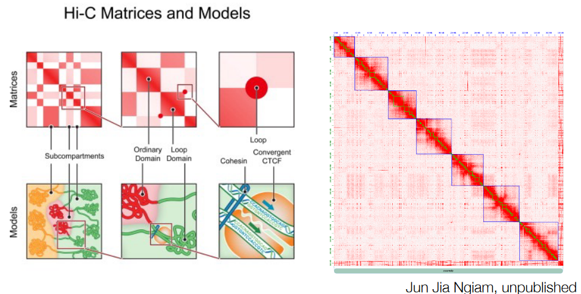
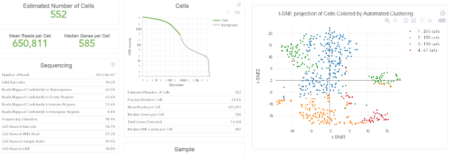

2 Genomic Sequencing and Databases
Modern day genomic sequencing began with Sanger sequencing.
Sanger sequencing, created in 1977, is a method used to read the genetic code of living things. It’s like reading a very long sentence written in a language that cells use. This method can read up to 800 to 1000 ‘letters’ of this genetic sentence in one go. Think of it as reading a paragraph with 800 to 1000 words! And now, modern versions of this method can read 96 paragraphs all at once, making it faster and more efficient.
Starting from 2004, progress in this field has been really fast. The first machinery that were used before that have become old-fashioned and aren’t used as much anymore.
2.1 Sequencing Fundamentals
There are a few special words we need to know
Depth
This is like how many times we read the same sentence in the book to be really sure we got it right.
Coverage
This is like the average number of times we read different sentences in a part of the book.
Read length
This is just how much of the book we can read at once. It’s like reading a long or short paragraph.
When we’re reading this book, we want to make sure we cover every part equally, like giving the same attention to every page. This is called uniform coverage.
There are two main ways to read the book:
- One way reads a lot of sentences quickly, but not all of them in detail.
- The other way reads fewer sentences, but really understands them well.
So, you can choose to read a lot of the book or read less but really understand it deeply.
2.2 Illumina HiSeq and NovaSeq
Creating Illumina libraries is like preparing a special recipe for reading DNA.
First, a long DNA strand and break it into smaller pieces. Then, the ends of these pieces are fixed to make them neat and ready. A special tail is then added to one end, like putting a ribbon on a gift.
After that, tiny adapters, like bookends, are attached to both ends of the DNA pieces. This helps scientists to read them later. Only the right-sized pieces are desired, so any pieces that are too big or too small are removed.
Scientists make many copies of these DNA pieces so we have enough to read. Finally, they use a special machine to read the DNA letters one by one, just like flipping through the pages of a book really fast. This helps scientists learn about the DNA’s secrets and how it works!
2.2.1 Typical Illumina Read Structure
A usual Illumina read has the following structure:
Illumina Forward
Imagine starting an exciting adventure book. The “Illumina Forward” is like the first page of the book, where the story begins. It’s the beginning point of our DNA reading journey.
Forward Target Primer
Think of this like a special bookmark in the adventure book. It’s a tiny piece that helps find the exact spot to start reading about in the DNA. It’s like telling the story, “Hey, start reading right here!”
Target
Picture this as a hidden treasure in the adventure story. The “target” is the part of the DNA that scientists really want to learn about. It’s like the exciting part of the story that holds a secret they’re curious about.
Reverse Target Primer
Just like the “Forward Target Primer” helps scientists find the beginning, this is like another bookmark that helps scientists find the end of the part we’re interested in. It’s like saying, “Okay, stop reading here!”
Illumina Reverse
This is like reaching the last page of a book. The Illumina Reverse marks the end of our reading journey for this section of DNA, letting scientists know that we’ve completed the sequence.
2.2.2 Single End, Paired End, and Mate-Pairs
Illumina is a method for reading DNA that’s like solving different puzzles. Imagine having pieces of a jigsaw puzzle.
First, the scientist can look at just one side of each piece to see what’s there (i.e., single end). Or they can look at both sides of the pieces, but not the part in the middle (i.e., paired end). There’s also a special kind where they link bigger puzzle pieces together (i.e., mate-pair) to understand them better.
In the end, no matter which puzzle they choose, they get to read both sides and find out the average distance between them. These days, the most popular puzzle is the paired end, while the mate-pair puzzle is not used much.
Also, the smaller the puzzle piece, the harder it is to figure out where it fits in the bigger picture of the DNA. But having two sets of puzzle pieces helps scientists figure out where they go in the DNA picture more accurately.
2.2.3 Barcoding
Illumina sequencing can use something called **barcodes*&, which are like special tags added to each sequence. Think of them like labels on different books.
Imagine a library of books where and each book has a unique label. In the same way, the sequences get their own labels. If the labels are longer, it’s like having more specific tags for each book. This means you can put even more sequences together for reading, like having a huge shelf of books with similar tags.
For instance, a technology called 10x Genomics uses these longer labels to group sequences together, especially when looking at individual cells.
2.2.4 FASTQ Formats
Illumina returns data in a special text format called FASTQ. Imagine it’s like a recipe card for reading DNA. This card has four parts for each piece of DNA it reads:
The first part is like a name tag. It tells us which piece of DNA we’re looking at. Imagine it’s like a label on a box that says what’s inside.
The second part is the actual DNA sequence, like a secret code of letters (A, T, C, G, N). It’s like a coded message that we need to decode.
The third part is a repeat of the name tag. It’s like someone saying, “Hey, this is still the same box we talked about earlier.”
The fourth part is a set of quality codes. This helps us know how sure we are about each letter in the DNA sequence. It’s like having a confidence score for each letter.
And these quality codes are kind of like a secret code too, but they’re similar to something called Phred. It’s like a scale that tells us how reliable each letter is in the DNA code, just like how we might trust different people’s opinions more or less.
2.2.4.1 Phred Quality Scores
The quality \(Q\) is calculated using the following formula:
\[\begin{equation} Q = -10\log_{10}P \end{equation}\]
Though, the scores are reported in something called ASCII to save space.
2.3 PacBio Sequencing
PacBio sequencing is a way to read DNA that’s like watching a movie frame by frame.
Imagine a movie reel, but instead of film frames, there are DNA pieces. First, a special machine copies the DNA, making many identical pieces. These pieces are attached to a surface, like putting stickers on a wall.
Then, a tiny camera watches as a machine adds one letter at a time to the DNA chain. It’s like watching someone write a story, but in DNA language. The machine records this process, and scientists can use it to figure out the DNA’s secrets. This method is special because it can read long pieces of DNA in one go, like reading long sentences without stopping.
PacBio sequencing works a bit like making a detailed copy of a story. The scientists start with a special DNA template called an SMRTbell. Imagine this template as the outline of the story. They put it on a surface and use a special machine to make copies of it. These copies are like drafts of the story. Then, a tiny helper called a “polymerase” comes in and reads the story, one letter at a time. It’s like reading the book aloud to remember every detail.
But here’s the cool part: the machine doesn’t just read the story once. It goes over it several times, each time reading a bit more. These shorter readings are called subreads. Think of them as reading a book chapter by chapter.
Now, after all these readings, the scientists put everything together like a puzzle. It’s like taking all those drafts and arranging them to get the complete story. This final version is called a Circular Consensus Sequence, which is like having the perfect version of the story after making sure all the words are correct. This method helps us read long pieces of DNA with a high level of accuracy, just like getting the full story right.
2.3.1 PacBio Read Formats
When PacBio finishes reading DNA, it’s like recording a video of the process. This video is saved as a “.mov” file, kind of like how you save a video on your phone. But to understand the DNA story better, scientists need to do more things. They use special software called “SMRT Tools,” which PacBio made and shared with everyone. With this software, they can do different tasks, like taking off the starting and ending parts of the video (SMRT bell adapters), and pulling out the most important parts, which are like key scenes in the movie (Circular Consensus Reads / Subreads).
Once they’ve done all this, they can change the video into a different format, like turning a video into pictures or text. They do this to make it easier to work with. They can turn the video into a “.bam” file, which is like a fancy organizer for the pictures, or a “.fastq” file, which is like turning the video into words. All of this helps scientists understand DNA better and find out its secrets. You can learn more about this software and how it works on the PacBio website.
2.3.2 HiFi Reads
The newest thing from PacBio is called HiFi sequencing. It’s like reading a really long story in a special way. Imagine having a super-long book with chapters that are 20 pages long.
HiFi sequencing reads these chapters many times and figures out the best version. It’s like asking different people to read the same chapter and then picking the one that’s most accurate. This helps us understand long sections of DNA really well.
2.4 Oxford Nanopore
Oxford Nanopore technology is a different way to read DNA. Instead of taking pictures, it watches electric signals over time. Think of it like watching a graph that goes up and down. This graph is called a squiggle.
They save this squiggle in a special file format called fast5. This file not only keeps the squiggle but also the letters that the computer guessed from the squiggle. It’s like writing down both what the graph looks like and what the scientist thinks it means. With new software they’re making, they can even go back to the squiggle and try to guess the letters again to make sure they got them right. It’s like looking at the graph again and trying to understand it even better.
2.4.1 Uses for Long DNA Reads
Using Oxford Nanopore technology for DNA reading has different strengths depending on how many times the DNA is read.
When they read it a few times (i.e., low coverage), it’s like filling in the missing pieces of a jigsaw puzzle or adding more information to an already started story. They can use these extra details to make an existing puzzle more complete (gap-filling), make a short story longer and clearer (scaffolding a short read assembly), or combine different pieces from different puzzles into one big picture (hybrid assembly).
But when they read the DNA many, many times (high coverage), it’s like writing a whole new story from scratch. They don’t need any other clues because they have everything they need. This is called “De novo assembly,” where they put together a complete picture of the DNA just by using these long reads. It’s like creating a new jigsaw puzzle using only the pieces from one box.
2.5 Ion Torrent
Ion Torrent sequencing is like a special tool that’s great for certain types of projects. When scientists need to read pieces of DNA that are a bit longer (around 400-600 letters), Ion Torrent is like a superhero.
Imagine reading a longer chapter of a book instead of just a few sentences. This is really helpful for projects like studying tiny living things called microbes that live in different places, like our bodies or the environment. These projects, called microbiome studies, benefit a lot from Ion Torrent because it helps scientists understand these tiny creatures in more detail.
2.6 BGISEQ and MGISEQ
BGI, a genomics institute, created special machines for reading DNA. One of them is called BGISEQ-500, kind of like an older model. It reads two lines of DNA that are 100 letters long each, making a total of around 520 million letters. Then there’s a newer model, MGISEQ-2000. It can read two lines that are 200 letters each, for a total of about 1 trillion letters! These machines were made to compete with another popular DNA reader, Illumina. They were designed to be really affordable, making DNA reading cheaper for everyone. It’s like offering a lower-cost way to explore the secrets of genetics.
2.7 Hi-C, ChiP-seq, 10x, and Bisulfite Sequencing
There are various ways to investigate specific things about DNA, like its unique features. The main difference comes in how the DNA is prepared in the lab, but the actual reading part uses a common Illumina platform. Think of it like different ways to prepare a special dish using the same cooking equipment. No matter which method is used, they all provide a type of output file called “fastq,” which is like a document containing DNA information. However, the way this information is used can vary depending on the specific method employed.
2.7.1 Hi-C
Hi-C sequencing is a technique that helps scientists understand how different parts of DNA are arranged in space. It’s like making a map of how different rooms in a house are connected.

They capture this information by studying how different parts of the DNA are close to each other. This technique gives them a picture of how far apart or near different parts of the DNA are along the entire chromosome. It’s like learning about the layout of a house by seeing which rooms are close to each other.
2.7.2 10x Genomics
In 10x Genomics technology, each individual piece of DNA is given a special code, like a secret badge. Think of it like giving every player in a game their own unique mark. This mark is created using tiny gel beads in a special mixture. It’s as if each player gets a distinct symbol, helping scientists keep track of different pieces of DNA while they’re doing their research.
2.7.2.1 In Unicellular RNA Sequencing

When using 10x Genomics for single-cell RNA sequencing, there’s a twist in how it works. Instead of using big pieces of DNA, they focus on individual cells. Imagine each cell is like a small character in a story. They put one cell into each tiny gel bead, kind of like each character in their own small bubble. Inside these bubbles, the cell’s RNA, which is like its story, is turned into a special type of DNA called cDNA. This process is like translating the cell’s story into a new language. This way, scientists can study the stories of many individual cells all at once, and see how they’re different or similar.
2.7.3 Bisulfite Sequencing
In bisulfite sequencing, DNA is treated with a special chemical called bisulfite. This chemical changes some parts of the DNA. Imagine it’s like using a magic potion on a drawing. When applied to the DNA, bisulfite changes cytosine to uracil, but it doesn’t affect 5-methylcytosine. It’s like turning some parts of the drawing into a new color while leaving other parts the same. This helps scientists understand which parts of the DNA have certain molecules attached to them.
2.7.4 Chromatin Immunoprecipitation
Chromatin immunoprecipitation (i.e., ChIP) is a method used to study how proteins interact with DNA. Think of it as a way to find out which proteins are hanging out with specific parts of DNA. Here’s how it works:
First, scientists fix the proteins they’re interested in, like transcription factors, to the DNA using a special chemical called formaldehyde. Imagine it’s like gluing the proteins to certain parts of the DNA.
Then they carefully take out the DNA and break it into smaller pieces, like breaking a long necklace into smaller beads.
Next, they use special antibodies that act like magnets to pull out the proteins they’re studying. It’s like using a magnet to pick up certain toys from a pile.
After that, they heat everything up to undo the gluing caused by formaldehyde. This step is like melting the glue and separating the proteins from the DNA.
As a result, they end up with DNA fragments that were connected to the proteins they were interested in. It’s like getting clues about which proteins were spending time with specific parts of the DNA. This helps scientists understand how different proteins control and interact with genes and DNA.
2.8 Online Data Repositories for Sequenced Data
2.8.1 Sequence Read Archive (i.e., SRA)
The Sequence Read Archive (i.e., SRA) is like a big library where scientists from around the world store their DNA and RNA sequencing data. It’s kind of like a safe place for important information. This repository is taken care of by a group called NIH, in the USA.
Inside the SRA, you’ll find the raw data from sequencing, which is like the original puzzle pieces of DNA or RNA. Think of it as the untouched information from which scientists make discoveries. Both DNA and RNA data are kept here, like storing books of different kinds in the same library.
Many scientific journals require researchers to share their sequencing data in the SRA. This is important because it allows other scientists to check their work and try things out for themselves. It’s like sharing a recipe so others can cook the same dish. Anyone can download this data for free, helping scientists all over the world learn from each other. However, more detailed information like complete genomes and detailed explanations are stored somewhere else. Sometimes scientists need to process the raw data a bit more to make sense of it, like cooking the raw ingredients into a delicious meal.
2.8.2 NCBI Genomes
The NCBI Genomes database is like a huge book that holds a lot of important details about different species. It not only tells you what species a living thing belongs to, but it also lets you know if its DNA has been fully read and studied.
Inside this database, you’ll find information about the species’ classification, kind of like its scientific family tree. It’s like knowing which branch of the animal kingdom it belongs to. Additionally, you can find out if the species’ DNA has been completely read and studied in-depth.
However, this database usually contains only the main or reference version of the species’ DNA, and it comes with annotations that tell you where different genes are located. These annotations are stored in a special kind of file called a “.gff” file, which is like a map showing where different treasures (genes) are hidden in the DNA. So, this database is like a treasure trove of genetic information about different species, helping scientists and researchers understand their DNA better.
2.8.3 EBI: Ensembl Project
The EBI’s Ensembl Project is like a special tool that helps scientists explore and understand the DNA of different living things. It’s kind of like a map for navigating the genetic information of various species.
This project offers a genome browser that allows researchers to access annotated genomes of species that belong to specific groups in the animal kingdom. There are different sections, like Ensemble Bacteria, Protists, Fungi, Plants, Metazoa, and Vertebrates. It’s like having different shelves in a library for different types of books.
For each species in Ensembl, you’ll find at least the main version of its DNA and information about its genes. Think of it as knowing the basic story of each species. But sometimes, there’s even more information available, like extra chapters in a book. This project is a helpful tool for scientists to study and learn more about the genetics of various living things.